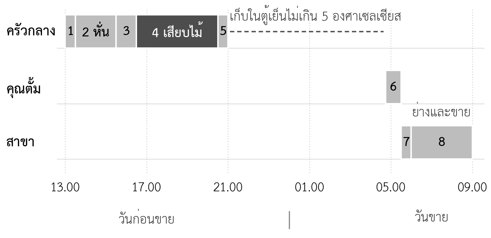
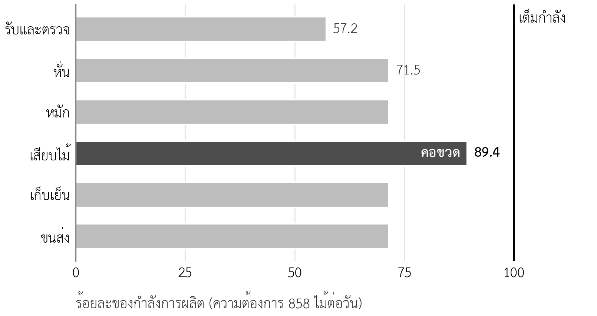

- อธิบายการตัดสินใจหลักที่แผนการดำเนินงานต้องตอบได้
- เขียนผังกระบวนการและตารางเวลาการทำงานหนึ่งวันของธุรกิจได้
- เลือกทำเลที่ตั้งด้วยเกณฑ์ถ่วงน้ำหนักได้
- ระบุทรัพยากร เงินลงทุน และบุคลากรที่กระบวนการต้องใช้ได้
- ประเมินผู้จัดหาวัตถุดิบ วางผู้จัดหาสำรอง และคำนวณจุดสั่งซื้อได้
- คำนวณกำลังการผลิต อัตราการใช้กำลังการผลิต และระบุคอขวดได้
- คำนวณต้นทุนต่อหน่วยที่รวมผลของของเสียได้
- กำหนดจุดควบคุมคุณภาพพร้อมเกณฑ์ที่วัดได้
- อธิบายว่าการดำเนินงานต้องเปลี่ยนอย่างไรตามระยะของเส้นทางสู่เป้าหมาย
ความนำ
บทที่ 7 ให้ตัวเลขที่สำคัญที่สุดของแผน คือยอดขายที่ธุรกิจคาดว่าจะขายได้ในแต่ละเดือน แต่ยอดขายเป็นเพียงคำสัญญาต่อผู้อ่านแผน คำถามต่อมาที่ธนาคารและผู้ลงทุนจะถามเสมอคือ ธุรกิจผลิตและส่งมอบได้ตามที่สัญญาไว้หรือไม่ ทำที่ไหน ใช้คน เครื่องมือ และวัตถุดิบเท่าใด ต้นทุนต่อหน่วยเท่าใด และคุมคุณภาพอย่างไรเมื่อปริมาณเพิ่มขึ้น คำตอบของคำถามเหล่านี้รวมกันคือแผนการดำเนินงาน ซึ่งเป็นส่วนที่ 7 ของเล่มแผนธุรกิจ (ตารางที่ 1.6)
แผนการดำเนินงานเป็นส่วนที่นิสิตมักเขียนสั้นที่สุด เพราะคิดว่าเป็นเรื่องที่รู้อยู่แล้ว แต่ข้อสมมติที่เสี่ยงที่สุดของแผนขยายหลายแผนอยู่ในส่วนนี้ ในกรณีศึกษาหมูปิ้งอาจารย์ตั้ม ข้อสมมติว่าครัวกลางทำให้ต้นทุนต่อไม้ลดลงและรสชาติเท่ากันทุกสาขายังไม่มีหลักฐานเลย (บทที่ 3) บทนี้จึงไม่ได้สอนเพียงการบรรยายว่าธุรกิจทำงานอย่างไร แต่สอนการคำนวณว่ากระบวนการรองรับยอดขายได้จริงหรือไม่ และการกำหนดเกณฑ์ที่ใช้ตรวจว่ากระบวนการทำงานได้ตามแผน
8.1 แผนการดำเนินงานตอบคำถามอะไร
แผนการดำเนินงาน (operations plan) คือส่วนของแผนธุรกิจที่อธิบายว่าธุรกิจเปลี่ยนวัตถุดิบ แรงงาน และเครื่องมือให้เป็นสินค้าหรือบริการที่ส่งมอบให้ลูกค้าอย่างไร Heizer และคณะ (2020) สรุปการตัดสินใจด้านการดำเนินงานไว้สิบเรื่อง ได้แก่ การออกแบบสินค้าและบริการ การบริหารคุณภาพ การออกแบบกระบวนการและกำลังการผลิต ทำเลที่ตั้ง การวางผังพื้นที่ ทรัพยากรมนุษย์และการออกแบบงาน ห่วงโซ่อุปทาน สินค้าคงคลัง การจัดตารางงาน และการบำรุงรักษา ธุรกิจขนาดเล็กไม่ต้องเขียนครบทุกเรื่องอย่างละเอียด แต่ต้องตอบเรื่องที่กระทบยอดขาย ต้นทุน และคุณภาพของตนเอง
สำหรับแผนธุรกิจในรายวิชานี้ แผนการดำเนินงานควรตอบหกคำถามหลักตามตารางที่ 8.1 แต่ละคำถามมีผลลัพธ์ที่ต้องส่งต่อไปยังส่วนอื่นของแผน โดยเฉพาะแผนการเงินในบทที่ 10 ซึ่งใช้ตัวเลขเงินลงทุน ค่าจ้าง ค่าเช่า และต้นทุนต่อหน่วยจากบทนี้ทั้งหมด
ตารางที่ 8.1 คำถามหลักของแผนการดำเนินงานและผลลัพธ์ที่ส่งต่อ
| คำถาม | หัวข้อ | ผลลัพธ์ที่ต้องได้ | ส่งต่อไปที่ |
|---|---|---|---|
| ทำอย่างไร | 8.2 | ผังกระบวนการและตารางเวลาหนึ่งวัน | ทุกหัวข้อในบทนี้ |
| ทำที่ไหน | 8.3 | ทำเลที่เลือกพร้อมเหตุผลและค่าเช่า | แผนการเงิน (ต้นทุนคงที่) |
| ใช้อะไรและใคร | 8.4 | รายการเครื่องมือ เงินลงทุน และบุคลากร | แผนการเงิน แผนองค์กร (บทที่ 9) |
| ได้วัตถุดิบจากใคร | 8.5 | ผู้จัดหาหลักและสำรอง จุดสั่งซื้อ | แผนความเสี่ยง (บทที่ 11) |
| ทำได้เท่าใด | 8.6 | กำลังการผลิตของแต่ละขั้นตอน คอขวด | ตรวจกับประมาณการยอดขาย (บทที่ 7) |
| ต้นทุนและคุณภาพเท่าใด | 8.7–8.8 | ต้นทุนต่อหน่วย เกณฑ์คุณภาพ ของเสีย | แผนการเงิน ด่านตรวจ (บทที่ 6) |
8.2 การออกแบบกระบวนการ
8.2.1 ผังกระบวนการ
กระบวนการ (process) คือลำดับขั้นตอนที่เปลี่ยนวัตถุดิบเป็นสินค้าหรือบริการ การเขียนกระบวนการในแผนธุรกิจเริ่มจากการแยกขั้นตอนให้ละเอียดพอที่จะระบุได้ว่าแต่ละขั้นตอนใช้ใคร ใช้เครื่องมืออะไร ใช้เวลาเท่าใด และต้องตรวจคุณภาพอะไร ถ้าขั้นตอนใดหยาบเกินไป เช่น เขียนว่า "เตรียมหมู" ทั้งที่มีทั้งการหั่น การหมัก และการเสียบไม้ จะคำนวณกำลังการผลิตไม่ได้ เพราะแต่ละงานใช้คนและเวลาไม่เท่ากัน
ร้านหมูปิ้งอาจารย์ตั้ม (กรณีศึกษาสมมติ) ในปัจจุบันเตรียมหมูในครัวของร้าน แผนขยายย้ายงานเตรียมทั้งหมดไปที่ครัวกลาง แล้วส่งหมูที่เสียบไม้แล้วให้สามสาขาทุกเช้า ตารางที่ 8.2 แยกกระบวนการใหม่เป็นแปดขั้นตอน โดยครัวกลางทำงานในวันก่อนขาย และสาขาทำงานในเช้าวันขาย
ตารางที่ 8.2 ผังกระบวนการของครัวกลางและสาขา (กรณีศึกษาสมมติ)
| ขั้นตอน | เวลา | ผู้ทำ | สิ่งที่ทำ |
|---|---|---|---|
| 1 รับและตรวจหมู | 13.00–13.30 | พนักงานครัว | รับหมูจากร้านเนื้อหมูประจำ ตรวจสี กลิ่น และเวลาชำแหละ ชั่งน้ำหนัก |
| 2 หั่น | 13.30–15.30 | พนักงานครัว 1 คน | หั่นด้วยเครื่องหั่นให้ได้ชิ้นขนาดเดียวกัน |
| 3 หมัก | 15.30–16.30 | พนักงานครัว | ชั่งเครื่องหมักตามสูตร คลุกและพักในตู้เย็น |
| 4 เสียบไม้ | 16.30–20.30 | พนักงานครัว 2 คน | เสียบไม้ละ 25 กรัม |
| 5 บรรจุและเก็บเย็น | 20.30–21.00 | พนักงานครัว | แยกกล่องตามสาขา แช่ตู้เย็น ทำความสะอาดครัว |
| 6 ขนส่ง | 04.45–05.30 | คุณตั้ม | ส่งสามสาขาด้วยกล่องเก็บความเย็น |
| 7 ตั้งร้าน | 05.30–06.00 | พนักงานสาขา | ก่อไฟ ตั้งเตา ตรวจอุณหภูมิกล่อง |
| 8 ย่างและขาย | 06.00–09.00 | พนักงานสาขา | ย่าง ขาย ส่งออเดอร์ LINE บันทึกยอดขายและของเสีย |
การแยกงานแบบนี้ทำให้เห็นสองเรื่องที่สำคัญต่อแผน เรื่องแรก งานส่วนใหญ่ย้ายไปอยู่ที่ครัวกลาง พนักงานสาขาจึงทำงานเพียงวันละประมาณสี่ชั่วโมง ซึ่งเปลี่ยนรูปแบบการจ้างงาน (หัวข้อ 8.4) เรื่องที่สอง หมูที่เตรียมแล้วต้องรออยู่ในตู้เย็นประมาณแปดชั่วโมงก่อนขนส่ง การรักษาอุณหภูมิช่วงนี้จึงเป็นจุดควบคุมความปลอดภัยของอาหารที่สำคัญที่สุดของกระบวนการ (หัวข้อ 8.8)
8.2.2 ตารางเวลาหนึ่งวัน
ผังกระบวนการบอกลำดับของงาน แต่ไม่บอกว่างานใดเกิดขึ้นพร้อมกัน และใครว่างหรือไม่ว่างในช่วงใด ภาพที่ 8.1 จึงวางขั้นตอนทั้งหมดบนแกนเวลาตั้งแต่บ่ายวันก่อนขายจนถึงเช้าวันขาย แยกตามผู้ทำงานสามกลุ่ม ตัวเลขในแถบคือลำดับขั้นตอนในตารางที่ 8.2 ภาพแบบนี้ช่วยตรวจสามเรื่อง คือ คนคนเดียวไม่ได้ถูกวางให้อยู่สองที่ในเวลาเดียวกัน ช่วงเวลาระหว่างขั้นตอนพอสำหรับงานจริง และมีเวลาพักเพียงพอ ในกรณีศึกษา คุณตั้มเป็นผู้ขนส่งตอนเช้าและดูแลสาขาเดิม จึงไม่ควรทำงานในครัวกลางช่วงค่ำด้วย ถ้าแผนให้คุณตั้มทำทั้งสองงาน แผนจะดูประหยัดค่าจ้าง แต่ทำจริงไม่ได้ในระยะยาว

8.3 ทำเลที่ตั้ง
ทำเลที่ตั้งมีสองความหมายในแผนการดำเนินงาน สำหรับหน้าร้านที่ลูกค้ามาซื้อ ทำเลเป็นเรื่องของการตลาด คือต้องอยู่ที่ลูกค้าเดินผ่าน ซึ่งร้านเลือกโรงเรียน ก และ ค จากการขายทดลองที่ด่าน 0 แล้ว (บทที่ 6) สำหรับสถานที่ผลิตที่ลูกค้าไม่เห็น เช่น ครัวกลาง ทำเลเป็นเรื่องของต้นทุนและความสะดวกในการทำงาน เกณฑ์จึงต่างกัน ได้แก่ ระยะทางถึงสาขา ค่าเช่า ระยะทางถึงผู้จัดหาวัตถุดิบ และความพร้อมของพื้นที่ เช่น ระบบน้ำ ไฟ และการระบายน้ำที่ผ่านเกณฑ์สุขลักษณะ
การเลือกทำเลใช้ตารางถ่วงน้ำหนักแบบเดียวกับการเลือกเส้นทางในบทที่ 6 น้ำหนักของเกณฑ์ต้องกำหนดก่อนให้คะแนน และควรสะท้อนว่าเกณฑ์ใดกระทบธุรกิจมากที่สุด ร้านให้น้ำหนักระยะทางถึงสาขาและความพร้อมของพื้นที่สูงกว่าค่าเช่า เพราะการขนส่งตอนเช้ามืดต้องเร็ว และการปรับปรุงพื้นที่ที่ไม่พร้อมจะใช้เงินลงทุนมากกว่าส่วนต่างของค่าเช่าหลายปี (ตารางที่ 8.3)
ตารางที่ 8.3 เปรียบเทียบทำเลครัวกลางด้วยเกณฑ์ถ่วงน้ำหนัก (กรณีศึกษาสมมติ)
| เกณฑ์ (น้ำหนัก) | ก. ห้องแถวหลังสาขาเดิม | ข. ปรับครัวบ้านคุณตั้ม | ค. ห้องเช่าใกล้ตลาดสด |
|---|---|---|---|
| ใกล้สามสาขา (3) | 4 | 2 | 4 |
| ค่าเช่า (2) | 3 (3,000 บาทต่อเดือน) | 5 (ไม่มีค่าเช่า) | 2 (4,000 บาทต่อเดือน) |
| ใกล้ผู้จัดหาหมู (2) | 3 | 2 | 5 |
| พื้นที่ น้ำ ไฟ ระบายน้ำ (3) | 3 | 2 | 4 |
| คะแนนถ่วงน้ำหนัก | 3.3 | 2.6 | 3.8 |
ทำเล ค ได้คะแนนสูงที่สุดแม้ค่าเช่าแพงที่สุด เพราะอยู่ใกล้ร้านเนื้อหมูประจำ ทำให้หมูถึงครัวเร็ว และพื้นที่มีท่อระบายน้ำพร้อม ทำเล ข ไม่มีค่าเช่า แต่เป็นตัวเลือกที่ผู้ประกอบการมักเลือกโดยไม่คิดต่อ ครัวในบ้านพักอาศัยมักต้องปรับปรุงมากเพื่อรองรับการผลิตวันละหลายร้อยไม้ และแยกพื้นที่ผลิตอาหารออกจากพื้นที่อยู่อาศัยได้ยาก คะแนนที่ต่ำในเกณฑ์อื่นจึงชดเชยค่าเช่าที่ประหยัดได้ไม่หมด
8.4 ทรัพยากรและบุคลากร
8.4.1 เครื่องมือและเงินลงทุน
ทรัพยากรที่ต้องใช้ควรมาจากผังกระบวนการ ไม่ใช่จากรายการที่คิดว่าร้านควรมี ทุกขั้นตอนในตารางที่ 8.2 ต้องมีเครื่องมือรองรับ และเครื่องมือทุกรายการต้องตอบได้ว่าใช้ในขั้นตอนใด วิธีนี้ป้องกันความผิดพลาดสองแบบ คือลืมเครื่องมือที่จำเป็น และซื้อเครื่องมือที่ไม่ได้ใช้ ตารางที่ 8.4 แยกเงินลงทุนครัวกลาง 250,000 บาทตามขั้นตอนที่ใช้
ตารางที่ 8.4 เงินลงทุนครัวกลางแยกตามขั้นตอนที่ใช้ (กรณีศึกษาสมมติ)
| รายการ | ใช้ในขั้นตอน | จำนวนเงิน (บาท) |
|---|---|---|
| ปรับปรุงห้อง ระบบน้ำ ไฟ และระบายน้ำ | ทุกขั้นตอน | 80,000 |
| ตู้แช่เย็น 2 ตู้ | 3 หมัก และ 5 เก็บเย็น | 60,000 |
| เครื่องหั่น | 2 หั่น | 35,000 |
| โต๊ะสเตนเลสและอ่างล้าง | 2–5 | 30,000 |
| รถจักรยานยนต์พ่วงข้างมือสองและกล่องเก็บความเย็น | 6 ขนส่ง | 30,000 |
| ถังหมัก ภาชนะ ตาชั่ง และเทอร์โมมิเตอร์ | 1, 3, 4 และการตรวจคุณภาพ | 15,000 |
| รวม | 250,000 |
ตาชั่งและเทอร์โมมิเตอร์เป็นรายการที่ราคาต่ำที่สุด แต่เป็นเครื่องมือที่ทำให้วัดคุณภาพได้ ถ้าไม่มีตาชั่ง ร้านจะรู้ไม่ได้ว่าเครื่องหมักเท่ากันทุกครั้งหรือไม่ และถ้าไม่มีเทอร์โมมิเตอร์ ร้านจะพิสูจน์ไม่ได้ว่าหมูเก็บไว้ที่อุณหภูมิปลอดภัย ซึ่งเป็นหลักฐานที่ด่าน 1 และด่าน 2 ต้องใช้
8.4.2 บุคลากร
ผังกระบวนการและตารางเวลาบอกจำนวนคนและชั่วโมงทำงานที่ต้องใช้ ครัวกลางต้องการพนักงานสองคนทำงานบ่ายถึงค่ำ ส่วนสาขาใหม่ต้องการคนย่างและคนขายเฉพาะช่วงเช้าประมาณสี่ชั่วโมง ร้านจึงจ้างพนักงานสาขาแบบไม่เต็มเวลา ซึ่งตรงกับลักษณะงานและลดค่าจ้างได้มากกว่าการจ้างเต็มวัน (ตารางที่ 8.5)
ตารางที่ 8.5 บุคลากรตามแผนขยาย (กรณีศึกษาสมมติ)
| ตำแหน่ง | จำนวน | เวลาทำงาน | ค่าจ้างต่อคนต่อเดือน (บาท) | รวมต่อเดือน (บาท) |
|---|---|---|---|---|
| พนักงานครัวกลาง | 2 | 13.00–21.00 | 9,000 | 18,000 |
| พนักงานสาขาใหม่ (ผู้ย่างและผู้ขาย) | 4 (สาขาละ 2) | 05.30–09.30 | 4,500 | 18,000 |
| พนักงานสาขาเดิม | 1 | เหมือนเดิม | 9,000 | 9,000 (มีอยู่แล้ว) |
| คุณตั้ม | 1 | ขนส่ง ดูแลสาขาเดิม ตรวจคุณภาพ | ค่าตอบแทนเจ้าของ (บทที่ 10) | – |
| ค่าจ้างที่เพิ่มขึ้น | 36,000 |
ค่าจ้างที่เพิ่มขึ้นเดือนละ 36,000 บาทและค่าเช่าครัวกลางเดือนละ 4,000 บาทเป็นต้นทุนคงที่ใหม่ที่แผนการเงินต้องใช้ ตัวเลขนี้ยังบอกว่าบทบาทของคุณตั้มเปลี่ยนไป จากคนที่หมักและย่างเองทุกวัน เป็นผู้ประสานงานและผู้ตรวจคุณภาพของสามสาขา บทที่ 9 จะเขียนบทบาทนี้เป็นโครงสร้างองค์กรและหน้าที่ของแต่ละตำแหน่ง
8.5 ผู้จัดหาวัตถุดิบและสินค้าคงคลัง
8.5.1 ผู้จัดหาหลักและผู้จัดหาสำรอง
ผู้จัดหา (supplier) คือธุรกิจที่ขายวัตถุดิบหรือบริการให้ธุรกิจของเรา ในแผนธุรกิจ ผู้จัดหาที่ต้องเขียนละเอียดคือผู้จัดหาของวัตถุดิบที่สำคัญต่อคุณภาพหรือมีสัดส่วนต้นทุนสูง สำหรับหมูปิ้ง เนื้อหมูเป็นทั้งสองอย่าง เพราะเป็นทั้งรสชาติหลักและประมาณร้อยละ 70 ของต้นทุนผันแปรต่อไม้ ปัจจุบันร้านซื้อหมูจากร้านเนื้อหมูประจำแห่งเดียว ซึ่งเป็นพันธมิตรหลักใน Business Model Canvas (บทที่ 2) ความสัมพันธ์นี้ทำให้ได้หมูคุณภาพเดิมทุกวัน แต่ก็เป็นความเสี่ยง เพราะถ้าร้านเนื้อปิดหรือขึ้นราคา ร้านไม่มีทางเลือก
การประเมินผู้จัดหาใช้เกณฑ์สี่ด้าน คือ คุณภาพ ราคา ความตรงต่อเวลา และกำลังการจัดส่ง ตารางที่ 8.6 เปรียบเทียบผู้จัดหาหลักกับผู้จัดหาสำรอง แผนที่ดีไม่ได้เปลี่ยนผู้จัดหาเพียงเพราะราคาถูกกว่า แต่มีผู้จัดหาสำรองที่ทดลองซื้อจริงเป็นระยะ เพื่อให้รู้ว่าคุณภาพใช้ได้ก่อนวันที่ต้องใช้จริง
ตารางที่ 8.6 ประเมินผู้จัดหาเนื้อหมู (กรณีศึกษาสมมติ)
| เกณฑ์ | ร้านเนื้อหมูประจำ (หลัก) | ร้านเนื้อหมูอีกแห่งในตลาดสด (สำรอง) |
|---|---|---|
| คุณภาพ | ดี สม่ำเสมอ ร้านใช้มาสามปี | ยังไม่รู้ ต้องทดลองซื้อ |
| ราคาเมื่อซื้อวันละประมาณ 20 กิโลกรัม | 144.40 บาทต่อกิโลกรัม (ลดร้อยละ 5) | ต้องสอบถาม |
| ความตรงต่อเวลา | ส่งถึงครัวกลางภายใน 13.00 น. | อยู่ในตลาดเดียวกัน ไปรับเองได้ |
| กำลังการจัดส่ง | สูงสุดวันละ 37.5 กิโลกรัม | ยังไม่รู้ |
| แนวทาง | ซื้อทุกวัน ทำข้อตกลงราคาเป็นลายลักษณ์อักษร | ทดลองซื้อเดือนละครั้ง ทำครัวกลางเทียบรสชาติ |
8.5.2 สินค้าคงคลังและจุดสั่งซื้อ
สินค้าคงคลัง (inventory) คือวัตถุดิบหรือสินค้าที่ธุรกิจเก็บไว้รอใช้ วัตถุดิบแต่ละชนิดต้องการวิธีจัดการต่างกันตามอายุการเก็บ เนื้อหมูสดเก็บได้สั้น ร้านจึงสั่งรายวันตามยอดที่ต้องผลิต และไม่เก็บสต็อก ส่วนวัตถุดิบที่เก็บได้นาน เช่น ถ่าน ไม้เสียบ เครื่องปรุง และถุง ร้านซื้อเป็นล็อตเพื่อได้ราคาดีกว่า แต่ต้องรู้ว่าควรสั่งใหม่เมื่อใด
จุดสั่งซื้อ (reorder point) คือระดับของสินค้าคงคลังที่ต้องสั่งซื้อใหม่ คำนวณจากปริมาณที่ใช้ต่อวัน คูณจำนวนวันที่รอสินค้า แล้วบวกสต็อกปลอดภัย ซึ่งเผื่อไว้กรณีใช้มากกว่าปกติหรือสินค้ามาช้า ตัวอย่างถ่านของร้าน สามสาขาใช้วันละ 18 กิโลกรัม ผู้ขายส่งของภายใน 3 วัน และร้านเผื่อสต็อกปลอดภัย 2 วัน จุดสั่งซื้อจึงเท่ากับ 18 คูณ 3 บวก 18 คูณ 2 หรือ 90 กิโลกรัม เมื่อถ่านเหลือ 90 กิโลกรัม ร้านต้องสั่งทันที (ตารางที่ 8.7)
ตารางที่ 8.7 การจัดการวัตถุดิบแต่ละประเภท (กรณีศึกษาสมมติ)
| วัตถุดิบ | อายุการเก็บ | วิธีสั่งซื้อ | จุดสั่งซื้อหรือหลักการ |
|---|---|---|---|
| เนื้อหมูสด | สั้นมาก | สั่งทุกวันตามยอดผลิต | สั่งตามยอดขายของวันเดียวกันในสัปดาห์ก่อน ปรับตามออเดอร์ LINE |
| ถ่าน | นาน | ซื้อเป็นล็อต | ใช้วันละ 18 กก. รอ 3 วัน เผื่อ 2 วัน จุดสั่งซื้อ 90 กก. |
| ไม้เสียบ ถุง | นาน | ซื้อยกลัง | หลักเดียวกับถ่าน |
| เครื่องหมัก | ปานกลาง | ซื้อยกลังเฉพาะที่เก็บได้นาน | หมุนเวียนแบบเข้าก่อนออกก่อน ตรวจวันหมดอายุทุกสัปดาห์ |
8.6 กำลังการผลิตและคอขวด
8.6.1 กำลังการผลิตของแต่ละขั้นตอน
กำลังการผลิต (capacity) คือปริมาณสูงสุดที่กระบวนการผลิตได้ในช่วงเวลาหนึ่ง กำลังการผลิตของทั้งกระบวนการไม่ได้เท่ากับขั้นตอนที่ทำได้มากที่สุด แต่เท่ากับขั้นตอนที่ทำได้น้อยที่สุด ขั้นตอนนั้นเรียกว่าคอขวด (bottleneck) Goldratt และ Cox (2004) เสนอว่าการปรับปรุงกระบวนการต้องเริ่มที่คอขวด เพราะการเพิ่มกำลังของขั้นตอนอื่นไม่ได้ทำให้ผลผลิตรวมเพิ่มขึ้นเลย
วิธีคำนวณสำหรับแผนธุรกิจมีสามขั้น ขั้นแรก คำนวณกำลังต่อวันของทุกขั้นตอน จากจำนวนคนหรือเครื่องมือ คูณความเร็วต่อชั่วโมง คูณจำนวนชั่วโมงทำงาน ขั้นที่สอง คำนวณอัตราการใช้กำลังการผลิต (capacity utilization) ของแต่ละขั้นตอน คือความต้องการหารด้วยกำลังการผลิต ขั้นที่สาม ตรวจกับความต้องการในเดือนที่ขายมากที่สุด ไม่ใช่ค่าเฉลี่ย เพราะกระบวนการที่รองรับค่าเฉลี่ยได้อาจรองรับเดือนที่ขายดีไม่ได้ บทที่ 7 คำนวณไว้แล้วว่าครัวกลางต้องผลิตวันละ 780 ไม้ในเดือนปกติ และ 858 ไม้ในเดือนที่ดัชนีฤดูกาลเท่ากับ 1.10
ตารางที่ 8.8 กำลังการผลิตและอัตราการใช้กำลังของครัวกลาง (กรณีศึกษาสมมติ)
| ขั้นตอน | วิธีคำนวณกำลัง | กำลังต่อวัน (ไม้) | ใช้ในเดือนปกติ (780 ไม้) | ใช้ในเดือนสูงสุด (858 ไม้) |
|---|---|---|---|---|
| รับและตรวจ | ร้านเนื้อส่งได้สูงสุด 37.5 กก. ไม้ละ 25 กรัม | 1,500 | ร้อยละ 52.0 | ร้อยละ 57.2 |
| หั่น | 1 คน 600 ไม้ต่อชั่วโมง 2 ชั่วโมง | 1,200 | ร้อยละ 65.0 | ร้อยละ 71.5 |
| หมัก | ขนาดถังหมักและตู้เย็น | 1,200 | ร้อยละ 65.0 | ร้อยละ 71.5 |
| เสียบไม้ | 2 คน 120 ไม้ต่อชั่วโมง 4 ชั่วโมง | 960 | ร้อยละ 81.3 | ร้อยละ 89.4 |
| เก็บเย็น | ตู้แช่ 2 ตู้ | 1,200 | ร้อยละ 65.0 | ร้อยละ 71.5 |
| ขนส่ง | ความจุกล่องเก็บความเย็น | 1,200 | ร้อยละ 65.0 | ร้อยละ 71.5 |

8.6.2 อ่านผลและตัดสินใจ
การเสียบไม้เป็นคอขวด ครัวกลางจึงผลิตได้สูงสุดวันละ 960 ไม้ แม้ขั้นตอนอื่นทำได้ 1,200 ไม้ขึ้นไป อัตราการใช้กำลังร้อยละ 89.4 ในเดือนที่ขายมากที่สุดหมายความว่ากระบวนการยังรองรับได้ แต่เหลือที่ว่างน้อย ถ้าพนักงานคนหนึ่งลาป่วย กำลังการเสียบไม้จะลดเหลือ 480 ไม้ทันที ซึ่งไม่พอแม้ในเดือนปกติ แผนจึงต้องระบุว่าใครจะทำแทน เช่น คุณตั้มหรือพนักงานสาขาเดิมช่วยเสียบไม้ในวันนั้น
ภาพที่ 8.2 ยังบอกว่าการลงทุนเพิ่มควรไปที่ใด ถ้าร้านซื้อตู้แช่เย็นใบที่สามหรือเครื่องหั่นที่เร็วขึ้น ผลผลิตรวมจะไม่เพิ่มเลย เพราะคอขวดยังเป็นการเสียบไม้ การเพิ่มกำลังที่ได้ผลจริงมีสามทาง คือ ฝึกให้พนักงานเร็วขึ้น เพิ่มชั่วโมงทำงานในช่วงที่ขายดี หรือเพิ่มคน แต่ละทางมีต้นทุนต่างกัน และต้องเลือกโดยเทียบต้นทุนเพิ่มกับยอดขายที่ต้องการรองรับ ไม่ใช่เลือกทางที่ทำให้กำลังการผลิตสูงที่สุด
ตารางที่ 8.9 ทางเลือกเพิ่มกำลังการผลิตที่คอขวด (กรณีศึกษาสมมติ)
| ทางเลือก | กำลังการเสียบไม้หลังปรับ | ข้อดี | ข้อจำกัด |
|---|---|---|---|
| ฝึกพนักงานจาก 100 เป็น 120 ไม้ต่อชั่วโมง | 960 ไม้ | ไม่มีต้นทุนเพิ่มหลังฝึกเสร็จ | ใช้เวลา ระหว่างฝึกกำลังไม่พอ |
| ทำงานเพิ่ม 1 ชั่วโมงในเดือนที่ขายดี | 1,000 ไม้ (ที่ 100 ไม้ต่อชั่วโมง) | ปรับได้ทันที จ่ายเฉพาะเดือนที่ต้องใช้ | มีค่าล่วงเวลา พนักงานเหนื่อย |
| จ้างพนักงานไม่เต็มเวลาเพิ่ม 1 คน | 1,440 ไม้ (ที่ 120 ไม้ต่อชั่วโมง) | กำลังเหลือรองรับการเติบโต | ค่าจ้างคงที่เพิ่ม แม้เดือนที่ขายน้อย |
8.7 ต้นทุนต่อหน่วยและของเสีย
8.7.1 ต้นทุนต่อหน่วยหลังตั้งครัวกลาง
เหตุผลทางการเงินข้อหนึ่งของครัวกลางคือการซื้อวัตถุดิบในปริมาณมากขึ้นจะได้ราคาที่ดีขึ้น เป้าหมาย SMART ของระยะที่ 1 และเกณฑ์ของด่าน 1 กำหนดว่าต้นทุนต่อไม้ต้องไม่เกิน 5.20 บาท (บทที่ 6) แผนการดำเนินงานต้องแสดงว่าตัวเลขนี้มาจากไหน โดยแยกต้นทุนต่อไม้ทีละรายการ แล้วอธิบายเหตุผลที่แต่ละรายการลดลงหรือไม่ลด (ตารางที่ 8.10)
ตารางที่ 8.10 ต้นทุนผันแปรต่อไม้ก่อนและหลังตั้งครัวกลาง (บาท กรณีศึกษาสมมติ)
| รายการ | ปัจจุบัน | หลังตั้งครัวกลาง | เหตุผล |
|---|---|---|---|
| เนื้อหมู 25 กรัม | 3.80 | 3.61 | ซื้อวันละประมาณ 20 กก. ได้ราคาลดร้อยละ 5 |
| เครื่องหมัก | 0.70 | 0.60 | ซื้อยกลัง |
| ไม้เสียบ | 0.30 | 0.25 | ซื้อยกลัง |
| ถ่าน | 0.40 | 0.40 | ใช้ที่สาขา ปริมาณต่อไม้เท่าเดิม |
| ถุงและบรรจุภัณฑ์ | 0.30 | 0.28 | ซื้อยกลัง |
| รวม | 5.50 | 5.14 |
ต้นทุนที่ลดลงจาก 5.50 เป็น 5.14 บาทดูเหมือนผ่านเกณฑ์ด่าน 1 อย่างสบาย แต่ตัวเลขนี้ยังไม่ได้คิดผลของของเสีย ซึ่งเป็นสิ่งที่แผนของนิสิตมักลืม
8.7.2 ของเสียกินส่วนต่าง
ของเสีย (waste) ในที่นี้คือสินค้าที่ผลิตแล้วแต่ขายไม่ได้ เช่น หมูที่เสียบแล้วแต่ขายไม่หมดและต้องทิ้ง หรือไม้ที่ย่างไหม้ ต้นทุนของไม้ที่ทิ้งไม่ได้หายไป แต่ไปเพิ่มต้นทุนของไม้ที่ขายได้ ต้นทุนต่อไม้ที่ขายได้จึงเท่ากับต้นทุนต่อไม้ที่ผลิต หารด้วยหนึ่งลบสัดส่วนของเสีย ตารางที่ 8.11 แสดงว่าของเสียเพียงร้อยละ 2 ทำให้ต้นทุนเกินเกณฑ์ด่าน 1 แล้ว
ตารางที่ 8.11 ต้นทุนต่อไม้ที่ขายได้ตามสัดส่วนของเสีย (กรณีศึกษาสมมติ)
| ของเสีย | วิธีคำนวณ | ต้นทุนต่อไม้ที่ขายได้ | เทียบเกณฑ์ด่าน 1 (ไม่เกิน 5.20 บาท) |
|---|---|---|---|
| ไม่มี | 5.14 ÷ 1.00 | 5.14 บาท | ผ่าน |
| ร้อยละ 1 | 5.14 ÷ 0.99 | 5.19 บาท | ผ่าน |
| ร้อยละ 2 | 5.14 ÷ 0.98 | 5.24 บาท | ไม่ผ่าน |
| ร้อยละ 3 | 5.14 ÷ 0.97 | 5.30 บาท | ไม่ผ่าน |
ผลนี้เปลี่ยนสิ่งที่แผนต้องควบคุม ร้านต้องคุมของเสียไม่ให้เกินร้อยละ 1 ซึ่งหมายความว่าสามสาขารวมกันทิ้งได้ไม่เกินวันละประมาณ 8 ไม้ในเดือนปกติ เกณฑ์นี้จึงต้องเข้าไปอยู่ในการควบคุมคุณภาพ (หัวข้อ 8.8) และการสั่งผลิตรายวันต้องใช้ข้อมูลยอดขายและออเดอร์ LINE ล่วงหน้า แทนการผลิตเผื่อไว้มาก ๆ ถ้าคุมได้ที่ร้อยละ 1 ร้านจะประหยัดต้นทุนได้ประมาณปีละ 75,442 บาทเมื่อเทียบกับต้นทุนปัจจุบัน (0.31 บาทคูณ 780 ไม้คูณ 312 วัน) ซึ่งเป็นตัวเลขที่ใช้ในแผนการเงินบทที่ 10
8.8 การควบคุมคุณภาพและความปลอดภัยของอาหาร
8.8.1 จุดควบคุมคุณภาพ
คุณค่าที่ร้านประกาศคือ อร่อย สะอาด และมาตรฐานเดียวกัน (บทที่ 2) เมื่อขยายเป็นสามสาขา คุณตั้มไม่สามารถชิมทุกไม้ด้วยตนเองได้อีก คุณภาพจึงต้องถูกออกแบบไว้ในกระบวนการ ด้วยจุดควบคุมคุณภาพ (quality control point) คือขั้นตอนที่ต้องตรวจด้วยเกณฑ์ที่วัดได้ พร้อมระบุว่าใครตรวจ ตรวจบ่อยเท่าใด และถ้าไม่ผ่านต้องทำอย่างไร เกณฑ์ที่เขียนว่า "หมูต้องสด" หรือ "ย่างให้สุก" ใช้ไม่ได้ เพราะแต่ละคนตีความต่างกัน
ด้านความปลอดภัยของอาหาร องค์การอนามัยโลกเสนอหลักห้าข้อ ได้แก่ รักษาความสะอาด แยกอาหารดิบกับอาหารสุก ทำให้สุกทั่วถึง เก็บอาหารที่อุณหภูมิปลอดภัย และใช้น้ำและวัตถุดิบที่ปลอดภัย โดยแนะนำให้เก็บอาหารที่ต้องแช่เย็นไว้ต่ำกว่า 5 องศาเซลเซียส และไม่วางอาหารที่สุกแล้วไว้ที่อุณหภูมิห้องนานเกินสองชั่วโมง (World Health Organization [WHO], 2006) ตารางที่ 8.12 แปลงหลักเหล่านี้และคุณค่าของร้านเป็นจุดควบคุมในกระบวนการ
ตารางที่ 8.12 จุดควบคุมคุณภาพของกระบวนการ (กรณีศึกษาสมมติ)
| ขั้นตอน | สิ่งที่ตรวจ | เกณฑ์ | ความถี่และผู้ตรวจ | ถ้าไม่ผ่าน |
|---|---|---|---|---|
| รับหมู | สี กลิ่น เวลาชำแหละ | สีชมพู ไม่มีกลิ่นผิดปกติ ถึงครัวภายใน 1 ชม. หลังชำแหละ | ทุกล็อต พนักงานครัว | คืนผู้จัดหา ใช้ผู้จัดหาสำรอง |
| หมัก | น้ำหนักเครื่องหมัก อุณหภูมิตู้ | ตามสูตรที่ชั่งไว้ ตู้ไม่เกิน 5 °C | ทุกล็อต พนักงานครัว | ปรับสูตรใหม่ แจ้งคุณตั้ม |
| เสียบไม้ | น้ำหนักต่อไม้ | 25 ± 3 กรัม | สุ่ม 10 ไม้ต่อรอบ | ปรับไม้ที่ไม่ผ่านทั้งรอบ |
| เก็บเย็น | อุณหภูมิตู้แช่ | ไม่เกิน 5 °C | บันทึกวันละ 2 ครั้ง | ย้ายตู้ ตรวจหมูทั้งล็อต |
| ขนส่ง | เวลาและอุณหภูมิในกล่อง | ไม่เกิน 45 นาที กล่องยังเย็น | ทุกเช้า คุณตั้ม | ปรับเส้นทางหรือเพิ่มน้ำแข็ง |
| ย่าง | ความสุก | สุกทั่ว สุ่มวัดอุณหภูมิกลางชิ้น | วันละ 3 ไม้ต่อสาขา | ย่างต่อ ฝึกพนักงานซ้ำ |
| ขาย | เวลาที่วางหมูสุก | ไม่เกิน 2 ชม. | ตลอดเวลาขาย พนักงานสาขา | ทิ้งและบันทึกเป็นของเสีย |
| ปิดร้าน | ของเสีย | ไม่เกินร้อยละ 1 ของที่ผลิต | ทุกวัน พนักงานสาขา | ปรับยอดสั่งผลิตวันถัดไป |
8.8.2 การวัดว่า "มาตรฐานเดียวกัน" จริง
จุดควบคุมในตารางที่ 8.12 ตรวจว่ากระบวนการทำตามสูตร แต่ไม่ได้ตรวจโดยตรงว่าลูกค้ารู้สึกว่ารสชาติเท่ากันทุกสาขา ซึ่งเป็นข้อสมมติที่ด่าน 1 ต้องพิสูจน์ เกณฑ์ของด่าน 1 ในบทที่ 6 จึงมีการชิมแบบไม่บอกสาขา โดยให้ผู้ชิม 30 คนชิมหมูปิ้งจากสามสาขาโดยไม่รู้ว่ามาจากสาขาใด ถ้าผู้ชิมไม่น้อยกว่าร้อยละ 70 แยกไม่ออกว่าไม้ใดมาจากสาขาใด ถือว่าผ่าน แผนการดำเนินงานควรกำหนดว่าร้านจะทดสอบแบบนี้ทุกสามเดือน ไม่ใช่รอทดสอบครั้งเดียวก่อนถึงด่าน เพื่อให้รู้ปัญหาเร็วพอที่จะแก้ได้
ด้านข้อกำหนดทางกฎหมาย สถานที่จำหน่ายอาหารต้องปฏิบัติตามกฎกระทรวงสุขลักษณะของสถานที่จำหน่ายอาหาร พ.ศ. 2561 ซึ่งกำหนดให้ผู้ประกอบกิจการและผู้สัมผัสอาหารต้องผ่านการอบรมตามหลักเกณฑ์ที่กำหนด (กฎกระทรวงสุขลักษณะของสถานที่จำหน่ายอาหาร พ.ศ. 2561, 2561) แผนการดำเนินงานจึงต้องรวมการอบรมของพนักงานใหม่ทุกคนไว้ในแผนเปิดสาขา ส่วนรายละเอียดของใบอนุญาตที่เกี่ยวข้องจะอยู่ในบทที่ 9
8.9 การดำเนินงานตามระยะของเส้นทางสู่เป้าหมาย
แผนการดำเนินงานในบทนี้ออกแบบสำหรับระยะที่ 1 เมื่อนำกำลังการผลิตของครัวกลางไปเทียบกับความต้องการของระยะต่อไป จะเห็นว่าการดำเนินงานต้องเปลี่ยนอย่างสิ้นเชิง ระยะที่ 2 มีร้านแฟรนไชส์ 100 ร้าน ร้านละ 300 ไม้ต่อวัน รวมกับสามสาขาของร้านเป็นวันละ 30,780 ไม้ หรือประมาณ 32 เท่าของกำลังสูงสุดของครัวกลาง ระยะที่ 3 มีร้านแฟรนไชส์ 300 ร้าน และหมูหมักแช่แข็งวันละประมาณ 21,600 แพ็ก แพ็กละ 10 ไม้ รวมเป็นวันละประมาณ 306,780 ไม้ หรือประมาณ 320 เท่าของครัวกลาง (ตารางที่ 8.13)
ตารางที่ 8.13 การดำเนินงานที่ต้องเปลี่ยนตามระยะ (กรณีศึกษาสมมติ)
| ประเด็น | ระยะที่ 1 | ระยะที่ 2 | ระยะที่ 3 |
|---|---|---|---|
| ปริมาณต่อวัน | 780–858 ไม้ | ประมาณ 30,780 ไม้ | ประมาณ 306,780 ไม้ |
| เท่าของกำลังครัวกลาง (960 ไม้) | ไม่เกิน 1 | ประมาณ 32 | ประมาณ 320 |
| สถานที่ผลิต | ครัวกลาง 1 แห่ง | ครัวกลางขนาดใหญ่หรือโรงงานขนาดเล็กในภาคอีสาน | โรงงานผลิตอาหารที่ได้รับอนุญาต |
| การขนส่ง | รถจักรยานยนต์พ่วงข้าง | ขนส่งแช่เย็นไปร้านแฟรนไชส์หลายจังหวัด | ขนส่งแช่แข็งไปศูนย์กระจายสินค้าของร้านค้าปลีก |
| การควบคุมคุณภาพ | เจ้าของตรวจเอง ใช้ตารางที่ 8.12 | คู่มือมาตรฐานร้านแฟรนไชส์ ผู้ตรวจประจำเขต | ระบบคุณภาพของโรงงานตามมาตรฐานของหน่วยงานด้านอาหาร |
ตัวเลขนี้เป็นอีกตัวอย่างของหลักที่ใช้มาตลอดรายวิชา เป้าหมายวันละ 3 ล้านบาทไม่ได้บอกว่าต้องมีโรงงาน แต่การคิดย้อนกลับจากเป้าหมายเป็นปริมาณการผลิตบอกชัดเจนว่าระยะที่ 3 เป็นธุรกิจการผลิตอาหาร ไม่ใช่ร้านหมูปิ้งที่ใหญ่ขึ้น ระยะที่ 1 จึงมีหน้าที่สำคัญอีกข้อหนึ่ง นอกจากทำกำไรและผ่อนหนี้ คือสร้างความรู้เรื่องสูตรมาตรฐาน การควบคุมอุณหภูมิ และการบันทึกข้อมูลคุณภาพ ซึ่งเป็นพื้นฐานที่ระยะต่อไปต้องใช้
8.10 จากแผนการดำเนินงานสู่แผนธุรกิจ
ผลของบทนี้เป็นเนื้อหาของแผนธุรกิจส่วนที่ 7 (ตารางที่ 1.6) ซึ่งควรมีเจ็ดองค์ประกอบ ได้แก่ ผังกระบวนการและตารางเวลาหนึ่งวัน ทำเลที่เลือกพร้อมเหตุผล รายการเครื่องมือและเงินลงทุนแยกตามขั้นตอน บุคลากรและค่าจ้าง ผู้จัดหาหลักและสำรองพร้อมการจัดการวัตถุดิบ กำลังการผลิตที่ตรวจกับเดือนที่ขายมากที่สุด และต้นทุนต่อหน่วยพร้อมจุดควบคุมคุณภาพ
แผนการดำเนินงานเชื่อมกับส่วนอื่นของแผนในสองทิศทาง ทิศทางแรก รับตัวเลขยอดขายจากแผนการตลาดมากำหนดกำลังการผลิต ทิศทางที่สอง ส่งตัวเลขเงินลงทุน ค่าจ้าง ค่าเช่า และต้นทุนต่อหน่วยไปให้แผนการเงิน ตารางที่ 8.14 สรุปตัวเลขที่บทที่ 10 จะใช้ ถ้าตัวเลขใดในตารางนี้เปลี่ยน ต้องแก้แผนการเงินตามทุกครั้ง
ตารางที่ 8.14 ตัวเลขจากแผนการดำเนินงานที่ส่งต่อให้แผนการเงิน (กรณีศึกษาสมมติ)
| รายการ | ค่า | ประเภทในแผนการเงิน |
|---|---|---|
| เงินลงทุนครัวกลาง | 250,000 บาท | เงินลงทุน |
| ค่าจ้างที่เพิ่มขึ้น | 36,000 บาทต่อเดือน | ต้นทุนคงที่ |
| ค่าเช่าครัวกลาง | 4,000 บาทต่อเดือน | ต้นทุนคงที่ |
| ต้นทุนผันแปรต่อไม้ | 5.14 บาท บวกผลของของเสีย | ต้นทุนผันแปร |
| สัดส่วนของเสียเป้าหมาย | ไม่เกินร้อยละ 1 | ข้อสมมติสำหรับวิเคราะห์ความอ่อนไหว (บทที่ 11) |
| กำลังการผลิตสูงสุด | 960 ไม้ต่อวัน | ข้อจำกัดของยอดขาย |
บทสรุป
เมื่อศึกษาบทนี้แล้ว นิสิตสามารถเขียนแผนการดำเนินงานที่ตอบได้ว่าธุรกิจผลิตและส่งมอบตามประมาณการยอดขายได้จริง ตั้งแต่การแยกกระบวนการเป็นขั้นตอนที่ละเอียดพอจะคำนวณได้ การวางตารางเวลาหนึ่งวัน การเลือกทำเลด้วยเกณฑ์ถ่วงน้ำหนัก การระบุเครื่องมือ เงินลงทุน และบุคลากรจากผังกระบวนการ การประเมินผู้จัดหาและคำนวณจุดสั่งซื้อ ไปจนถึงการคำนวณกำลังการผลิตและหาคอขวด การคำนวณต้นทุนต่อหน่วยที่รวมผลของของเสีย และการกำหนดจุดควบคุมคุณภาพที่มีเกณฑ์วัดได้
นิสิตนำความรู้นี้ไปเขียนแผนการดำเนินงานของกลุ่มในกิจกรรมท้ายบท ตัวเลขเงินลงทุน ค่าจ้าง ค่าเช่า และต้นทุนต่อหน่วยที่ได้จะเป็นข้อมูลนำเข้าของแผนการเงิน บทที่ 9 จะต่อยอดจากบุคลากรในบทนี้เป็นโครงสร้างองค์กร รูปแบบการจดทะเบียนธุรกิจ และใบอนุญาตที่เกี่ยวข้อง
คำศัพท์สำคัญ
- แผนการดำเนินงาน (operations plan)
- กระบวนการ (process)
- ผู้จัดหา (supplier)
- สินค้าคงคลัง (inventory)
- จุดสั่งซื้อ (reorder point)
- กำลังการผลิต (capacity)
- คอขวด (bottleneck)
- อัตราการใช้กำลังการผลิต (capacity utilization)
- ของเสีย (waste)
- จุดควบคุมคุณภาพ (quality control point)
คำถามทบทวน
- แผนการดำเนินงานต้องตอบคำถามหลักใดบ้าง และผลลัพธ์ของแต่ละคำถามส่งต่อไปที่ส่วนใดของแผนธุรกิจ
- เพราะเหตุใดผังกระบวนการที่เขียนว่า "เตรียมหมู" เพียงขั้นตอนเดียวจึงใช้คำนวณกำลังการผลิตไม่ได้
- เกณฑ์ในการเลือกทำเลของหน้าร้านต่างจากเกณฑ์ในการเลือกทำเลของครัวกลางอย่างไร
- ร้านกาแฟใช้นมวันละ 12 ลิตร ผู้ขายส่งของภายใน 2 วัน และร้านต้องการสต็อกปลอดภัย 1 วัน จงคำนวณจุดสั่งซื้อ
- จงอธิบายว่าเพราะเหตุใดการซื้อตู้แช่เย็นใบที่สามจึงไม่ทำให้ครัวกลางผลิตได้มากขึ้น
- ร้านขนมมีสามขั้นตอน ผสมแป้งได้ชั่วโมงละ 200 ชิ้น อบได้ชั่วโมงละ 120 ชิ้น บรรจุได้ชั่วโมงละ 150 ชิ้น ทำงานวันละ 6 ชั่วโมง ถ้าต้องขายวันละ 650 ชิ้น จงหาคอขวดและอัตราการใช้กำลังการผลิตของขั้นตอนนั้น
- ต้นทุนต่อหน่วยที่ผลิตเท่ากับ 18 บาท และมีของเสียร้อยละ 4 จงคำนวณต้นทุนต่อหน่วยที่ขายได้
- จงแก้เกณฑ์คุณภาพ "ย่างให้สุกและสะอาด" ให้เป็นจุดควบคุมคุณภาพที่วัดได้ตามรูปแบบของตารางที่ 8.12
- เพราะเหตุใดการตรวจตามจุดควบคุมคุณภาพอย่างเดียวจึงยังพิสูจน์ไม่ได้ว่ารสชาติเป็นมาตรฐานเดียวกันทุกสาขา
- การคิดย้อนกลับจากเป้าหมายวันละ 3 ล้านบาทเป็นปริมาณการผลิตบอกอะไรเกี่ยวกับระยะที่ 3 และระยะที่ 1 ต้องเตรียมอะไรไว้ให้ระยะต่อไป
กิจกรรมท้ายบท: แผนการดำเนินงานของกลุ่ม
กิจกรรมนี้ไม่นับคะแนน ผู้สอนจะให้ข้อมูลป้อนกลับในสัปดาห์ที่ 11 และผลงานจะเป็นส่วนที่ 7 ของเล่มแผนธุรกิจ
- ผังกระบวนการของสินค้าหรือบริการหลัก แยกขั้นตอนให้ระบุผู้ทำ เครื่องมือ และเวลาได้ (แบบตารางที่ 8.2)
- ตารางเวลาหนึ่งวันที่แสดงว่าใครทำอะไรในช่วงใด
- ทำเลที่เลือกพร้อมตารางถ่วงน้ำหนักอย่างน้อยสองทางเลือก
- รายการเครื่องมือและเงินลงทุนแยกตามขั้นตอน และบุคลากรพร้อมค่าจ้าง
- ผู้จัดหาหลักและสำรองของวัตถุดิบที่สำคัญที่สุด และจุดสั่งซื้อของวัตถุดิบหนึ่งรายการ
- ตารางกำลังการผลิตของทุกขั้นตอน คอขวด และอัตราการใช้กำลังในเดือนที่ขายมากที่สุดจากใบงานที่ 5
- ต้นทุนต่อหน่วยที่รวมผลของของเสีย และจุดควบคุมคุณภาพอย่างน้อยสามจุด
เอกสารอ้างอิง
กฎกระทรวงสุขลักษณะของสถานที่จำหน่ายอาหาร พ.ศ. 2561. (2561). ราชกิจจานุเบกษา, เล่ม 135 ตอนที่ 42 ก.
Goldratt, E. M., & Cox, J. (2004). The goal: A process of ongoing improvement (3rd rev. ed.). North River Press.
Heizer, J., Render, B., & Munson, C. (2020). Operations management: Sustainability and supply chain management (13th ed.). Pearson.
World Health Organization. (2006). Five keys to safer food manual. World Health Organization.